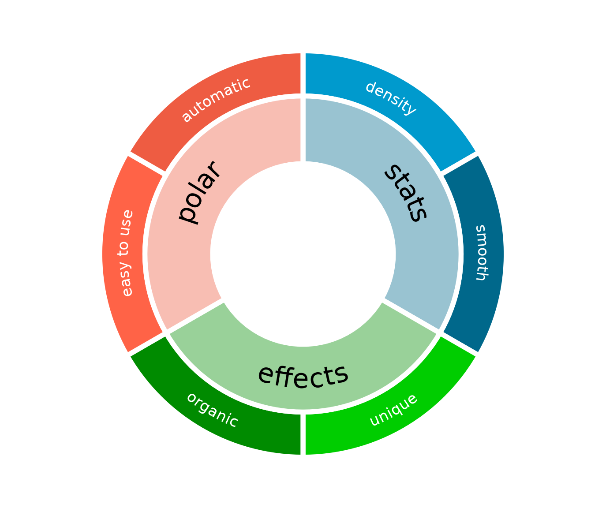

Polar co-ordinates in ggplot2 allow the creation of a variety of circular plots. These include pie charts, donut plots, radar charts, and various circular versions of line, bar and scatter plots. In many circumstances, curved text that follows the polar co-ordinate system can be a clearer and more visually appealing way to label elements of these plots and their axes. However, this is not natively possible in ggplot due to the mechanism of text handling in the underlying grid graphics system.
The textpathGrob at the heart of the geomtextpath package now makes it possible to create curved labels and axis text in polar co-ordinates with a minimum of effort. This vignette gives a brief demonstration of these features. We start by loading the necessary packages.
Curved axis labels
This package includes a new coord called coord_curvedpolar, which is almost identical to coord_polar, but draws curved axis labels around the circumferential (theta) axis.
The native coord_polar in ggplot produces horizontal axis labels, as we can show in the following example:
df <- data.frame(Temperature = c(4.4, 4.6, 6.3, 8.7, 11.6, 14.1, 15.9, 15.5,
13.1, 9.7, 6.7, 4.3, 3.6, 3.9, 6.4, 9.7, 13.2,
15.8, 18, 17.8, 15.1, 11.2, 7.2, 4.4),
City = rep(c("Glasgow", "Amsterdam"), each = 12),
Month = factor(rep(month.name, 2), month.name))
p <- ggplot(df, aes(Month, Temperature)) +
geom_col(aes(fill = City), position = position_dodge(width = 1)) +
geom_vline(xintercept = 1:13 - 0.5, color = "gray90") +
geom_hline(yintercept = 0:3 * 5, color = "gray90") +
scale_fill_manual(values = c("darkorange", "dodgerblue4")) +
ggtitle("Average monthly temperature in Amsterdam and Glasgow") +
theme_bw() +
theme(panel.border = element_blank(),
axis.text.x = element_text(size = 14),
axis.title.x = element_blank(),
panel.grid.major = element_blank())
p + coord_polar()Whereas, if we want curved axis labels, we can simply substitute coord_curvedpolar in as a replacement for coord_polar
p + coord_curvedpolar()The usual theme adjustments are available via theme(axis.text.x = element_text())
p + coord_curvedpolar() +
theme(axis.text.x = element_text(face = 2, color = "orangered3", hjust = 0))Note that the text that would normally be upside down is automatically flipped to improve legibility.
Curved labels
It is also straightforward to create other labels that curve appropriately in polar co-ordinates, using geom_textpath.
Straight text paths in Cartesian coordinates become curved in polar coordinates.
df <- data.frame(x = c(1, 1000), y = 1, text = "This is a perfectly flat label")
p <- ggplot(df, aes(x, y, label = text)) +
geom_textpath(size = 6) +
ylim(c(0.9, 1.1))
p
p + coord_polar(start = pi)
We can even construct complex diagrammatic plots:
df <- data.frame(x1 = c(seq(0, 10/6 * pi, pi/3),
seq(0, 10/6 * pi, 2*pi/3)),
y1 = c(rep(2, 6), rep(-1, 3)),
x2 = c(seq(0, 10/6 * pi, pi/3) + pi/3,
seq(0, 10/6 * pi, 2*pi/3) + 2*pi/3),
y2 = c(rep(4, 6), rep(2, 3)),
group = letters[c(1:6, (1:3) * 2)],
alpha = c(rep(1, 6), rep(0.4, 3)))
p <- ggplot(df, aes(x1, y1)) +
geom_rect(aes(xmin = x1, xmax = x2, ymin = y1, ymax = y2, fill = group,
alpha = alpha),
color = "white", size = 2) +
geom_textpath(data = data.frame(x1 = seq(0, 2 * pi, length = 300),
y1 = rep(0.5, 300),
label = rep(c("stats", "effects", "polar"), each = 100)),
aes(label = label), linetype = 0, size = 8,
flip_inverted = TRUE) +
geom_textpath(data = data.frame(x1 = seq(0, 2 * pi, length = 300),
y1 = rep(3, 300),
label = rep(c("density", "smooth", "unique", "organic",
"easy to use", "automatic"),
each = 50)),
aes(label = label), linetype = 0, size = 4.6, color = "white",
flip_inverted = TRUE) +
scale_y_continuous(limits = c(-5, 4)) +
scale_x_continuous(limits = c(0, 2*pi)) +
scale_fill_manual(values = c("deepskyblue3", "deepskyblue4",
"green3", "green4","tomato", "tomato2")) +
scale_alpha_identity() +
theme_void() +
theme(legend.position = "none")
pThat flip nicely to polar co-ordinates.
p + coord_polar()